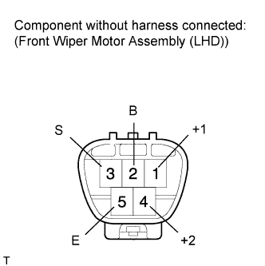
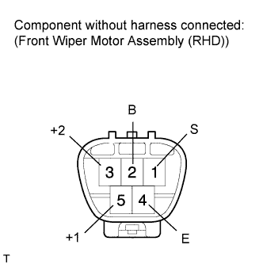

FRONT WIPER MOTOR > INSPECTION |
| 1. INSPECT WINDSHIELD WIPER MOTOR ASSEMBLY (for LHD) |
 |
Check the LO operation.
Apply battery voltage to the front wiper motor and check the speed of the front wiper motor.
| Measurement Condition | Specified Condition |
| Battery positive (+) → Terminal 1 (+1) Battery negative (-) → Terminal 5 (E) | Motor operates at low speed |
Check the HI operation.
Apply battery voltage to the front wiper motor and check the speed of the front wiper motor.
| Measurement Condition | Specified Condition |
| Battery positive (+) → Terminal 4 (+2) Battery negative (-) → Terminal 5 (E) | Motor operates at high speed |
Check the automatic stop operation.
Connect the positive (+) battery lead to terminal 1 (+1) of the connector and the negative (-) battery lead to terminal 5 (E). With the motor operating at low speed (LO), disconnect terminal 1 (+1) to stop the wiper motor operation at any position other than the automatic stop position.
Using SST, connect terminals 3 (S) and 1 (+1). Then connect the positive (+) battery lead to terminal 2 (B) of the connector to restart the motor operation at low speed (LO).
Check that the motor stops automatically at the automatic stop position.
| 2. INSPECT WINDSHIELD WIPER MOTOR ASSEMBLY (for RHD) |
 |
Check the LO operation.
Apply battery voltage to the front wiper motor and check the speed of the front wiper motor.
| Measurement Condition | Specified Condition |
| Battery positive (+) → Terminal 5 (+1) Battery negative (-) → Terminal 4 (E) | Motor operates at low speed |
Check the HI operation.
Apply battery voltage to the front wiper motor and check the speed of the front wiper motor.
| Measurement Condition | Specified Condition |
| Battery positive (+) → Terminal 3 (+2) Battery negative (-) → Terminal 4 (E) | Motor operates at high speed |
Check the automatic stop operation.
Connect the positive (+) battery lead to terminal 5 (+1) of the connector and the negative (-) battery lead to terminal 4 (E). With the motor operating at low speed (LO), disconnect terminal 5 (+1) to stop the wiper motor operation at any position other than the automatic stop position.
Using SST, connect terminals 1 (S) and 5 (+1). Then connect the positive (+) battery lead to terminal 2 (B) of the connector to restart the motor operation at low speed (LO).
Check that the motor stops automatically at the automatic stop position.